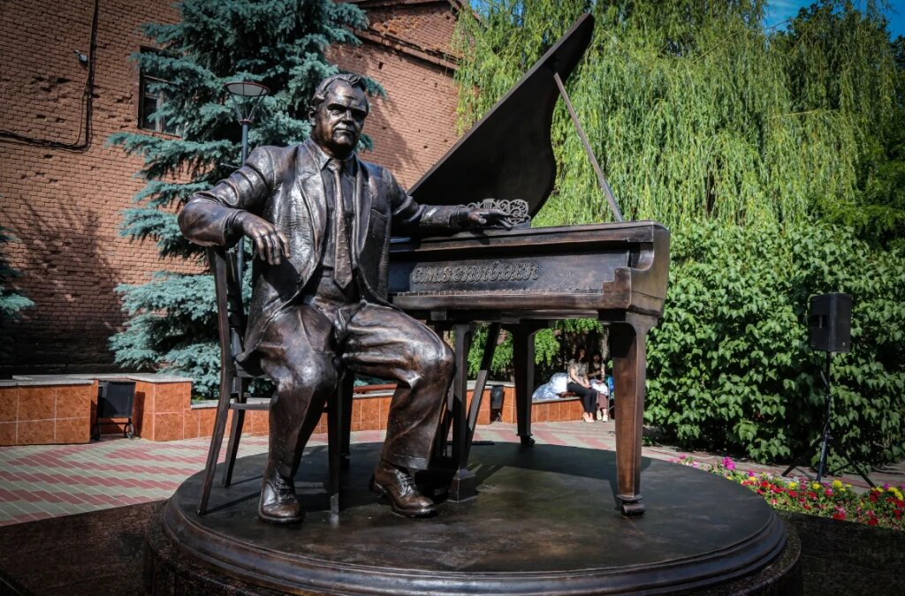

Общество
сегодня в 18:30

Изготовленный Зурабом Церетели памятник Тихону Хренникову открыли в Ельце
Новая достопримечательность появилась в Ельце. Здесь открыли памятник композитору Тихону Хренникову. В этом году исполняется 110 лет со дня его рождения. Двухтонная скульптура полностью из бронзы. Её создал народный художник СССР и России, президент Российской академии художеств Зураб Церетели. Это первая его работа, установленная в Липецкой области.